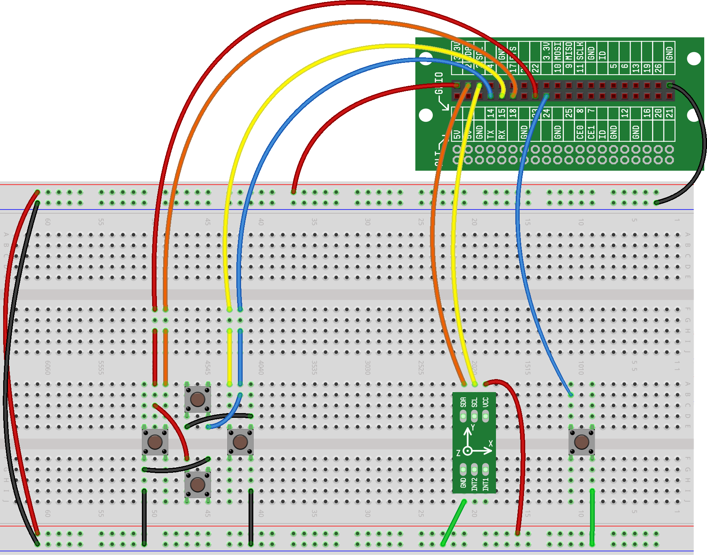

In this project, we will use the RaspberrySTEM kit to create a Minecraft controller. This first version of the controller will use the accelerometer to control where your character, Steve, is looking. In addition, we'll use four buttons to control Steve's movement foreward, backwards, left and right.
The hardware setup for this project includes the accelerometer and four buttons. For more information about setting up the accelerometer, refer back to the "Accelerometer" project. For more information about setting up the buttons, refer back to the "Button" project.
In the code we write below, we will assume that the buttons are attached the following GPIOs:
Top Button: GPIO15
Right Button: GPIO14
Button Button: GPIO23
Left Button: GPIO18
This is what your hardware setup should look like:
Our code for this project -- and most of our Minecraft projects -- will consist of three parts:
Initialization Code
Starting Minecraft
The Game Loop
Our initialization code will first import the modules and functions we'll need in the project. For this project, we need to import the functions needed for the following:
Using the Accelerometer
Using the Buttons
Starting Minecraft
Implementing the sleep function
Here is what the import function code will look like:
Next, we'll create our buttons and our accelerometer objects:
Once we have our initialization code written, we can bring up the
Minecraft window. As we discussed in an earlier project, that is accomplished
using the control.show() function:
Finally, we'll create the game loop that will house the logic for our code. For this project, our game loop will continue forever (until the user manually stops the game), so our loop will start with:
Each time through the loop, we'll want to do two things:
Check for button presses and take appropriate action
Check the accelerometer movement and take appropriate action
We'll start by checking each of the four buttons for presses, and if one of the buttons is pressed, we will move Steve in that direction. Here is what that code will look like:
If a key press is indicated, the code will start movement in that
direction using the control function; if a key press is not
indicated, movement in that direction will be stopped using
release=True in our control statements.
Next, we'll read the position of the kit using the data from the accelerometer and we'll control where Steve is looking based on that information:
Notice that because the the accelerometer returns a value between -1 and 1, and because our API expects a value between -50 and 50, we have to multiply our accelerometer result by 50 in our code.
Finally, to keep our game loop from running too quickly, we'll implement a
brief sleep (1/100 of the second) at the bottom of the loop:
Here is what the full code for this project should look like:
Here are some additional challenges you can attempt on your own:
Modify the code so that pressing and holding a button doesn't work -- Steve only moves a small amount each time a button is pressed
Modify the code so that Steve's movements are based on the accelerometer and where he looks are controlled by the buttons.
Add another button (or remap an existing button) to allow Steve to crouch at the press of the button.